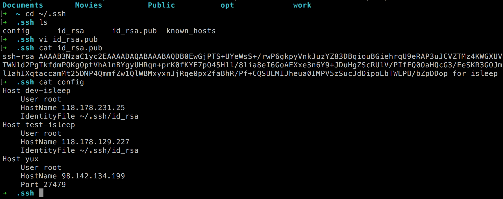
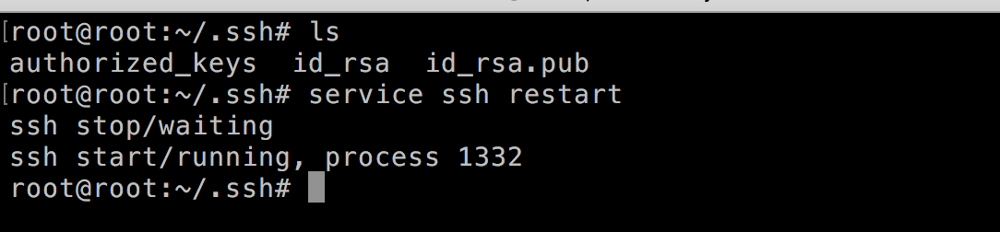
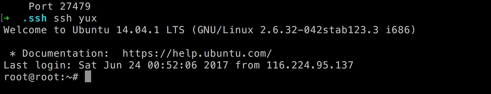

服务器数量过多，每次采用ip+端口 输入密码的方式登录比较繁琐，就采用了免密码和端口登录。
ssh -p 27479 root@98.142.134.199
本地操作：
本地的公钥位置： ~/.ssh/id_rsa.pub
~/.ssh目录下创建一个config文件，
文件内容如下：
Host yup
User root
HostName 98.142.134.199
Port 27479

将本地拷贝的公钥放入服务器~/.ssh/authorized_keys文件内。
重启ssh即可： service ssh restart

